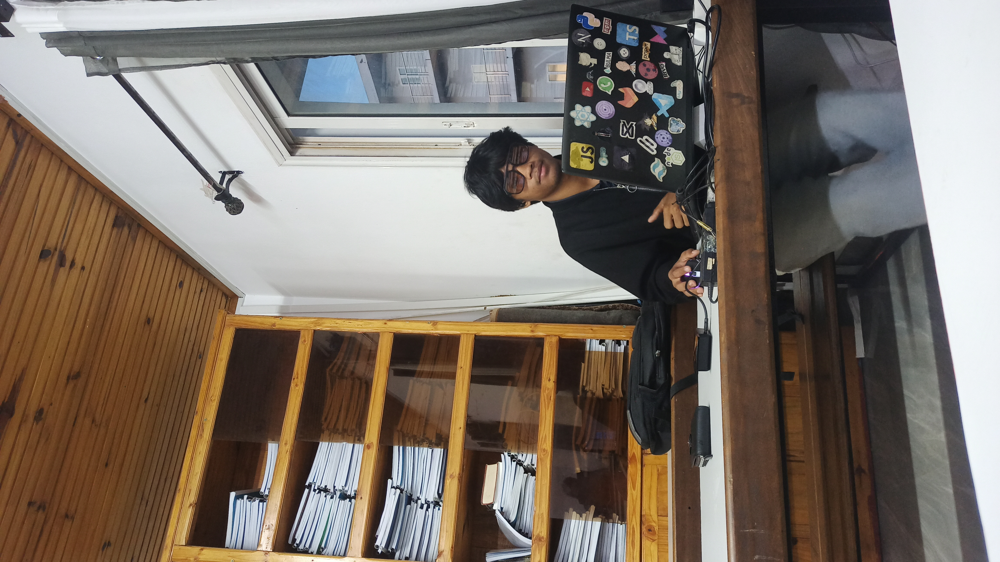

Interfaces sur mesure
Des interfaces claires et modernes, pensées pour ton public, ton image de marque et une expérience agréable sur tous les écrans.

Salut ! Moi, c’est Rivo, développeur full-stack. En gros, je transforme les idées en sites web et applications mobiles, et les bugs en petites crises existentielles !
Des interfaces claires et modernes, pensées pour ton public, ton image de marque et une expérience agréable sur tous les écrans.
Des sites responsive et performants, construits avec du code soigné et les bonnes pratiques du web.
Des applications mobiles intuitives et adaptées à tes besoins, de la conception des écrans jusqu’au développement.
Une application Android pensée pour simplifier les recharges au quotidien : elle lit les cartes Yas, Orange et Airtel par caméra ou depuis une image, puis prépare la commande USSD. Multi-scan, retraits Mobile Money et interface en français ou en malgache sont disponibles hors ligne, sans compte ni connexion Internet.
Voir le projetUn site de présentation pour Zenith, qui met en relation les talents de Madagascar avec des opportunités professionnelles internationales et présente ses services, ses offres et ses actualités.
Voir le projetUne plateforme dédiée au colloque international Connecter IA. Elle rassemble les informations sur l’événement, ses axes de recherche, le calendrier, le comité scientifique et la soumission de propositions autour de l’IA en éducation.
Voir le projetUn outil de suivi épidémiologique adapté au contexte malgache. Son tableau de bord présente les cas, patients, déclarations et leur évolution, tandis que l’interface permet d’accéder aux rubriques de gestion des cas, maladies, patients, centres de santé et zones. Il vise à mieux organiser la surveillance et à éclairer la prise de décision en santé publique.
Voir le projetAucun projet dans cette catégorie pour le moment.
Je suis développeur d’applications web et mobiles, passionné par tout ce qui transforme une idée en quelque chose de concret… et qui fonctionne vraiment, pas seulement sur la maquette.
J’aime créer des sites web et des applications mobiles modernes, simples à utiliser et agréables à regarder. Mon objectif ? Écrire du code propre, résoudre de vrais problèmes et rendre la technologie un peu moins compliquée pour tout le monde.
En gros, tu apportes l’idée, je sors le clavier. On réfléchit, on développe, on corrige quelques bugs (parce qu’ils aiment s’inviter sans prévenir), et on finit par créer quelque chose dont on peut être fiers.
Du code, des idées et une bonne dose de caféine… même sans café.
Une idée, un projet ou simplement envie d’échanger ? Contacte-moi directement par e-mail ou retrouve-moi sur mes réseaux. Je serai ravi d’en discuter avec toi.
rivoandriharisoa@gmail.com